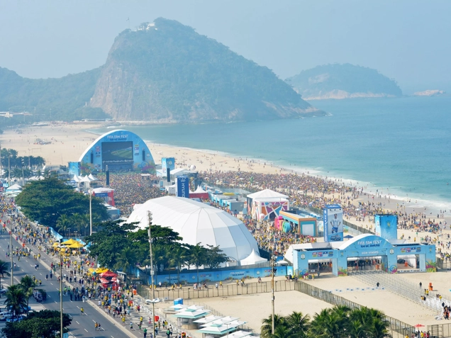

FIFA FAN FESTIVAL HISTORY
For four editions of the FIFA World Cup, the FIFA Fan Festival™ has been known as the greatest football party in the world! And it all began in 2002. FIFA noticed something stirring during the 2002 FIFA World Cup Korea/Japan™, when fans began coming together to watch games publicly, away from the stadiums. These impromptu gatherings made it clear there was a desire to celebrate the FIFA World Cup™ as a huge cultural event, something to be cherished and experienced with friends and family – in short, it was about more than just the football. For the 2006 FIFA World Cup™ in Germany, the FIFA Fan Festival™ became part of the Official Programme. The enthusiasm continued for the 2010 FIFA World Cup South Africa™, which saw events not only in South Africa but also in six capital cities around the globe. The trend grew further and after the 2014 edition in Brazil and the 2018 FIFA Fan Fest in Russia, almost 40 million people had attended the event in only four editions!

FIFA FAN FEST - FIFA WORLD CUP RUSSIA 2018™
After the exhilarating final of the 2018 FIFA World Cup Russia™, which saw France take the title, FIFA announced that the Russian edition of the FIFA Fan Fest™ welcomed 7.7 million visitors in 11 venues across Russia.
Read More

FIFA FAN FEST - FIFA WORLD CUP BRAZIL 2014™
Brazil in 2014 was the third FIFA Fan Fest™ programme and again proved an extraordinary event – as anyone who has seen the wonderful aerial photographs of the vast swathes of fans crowding onto the Copacabana Beach in Rio de Janeiro will testify.
Read More